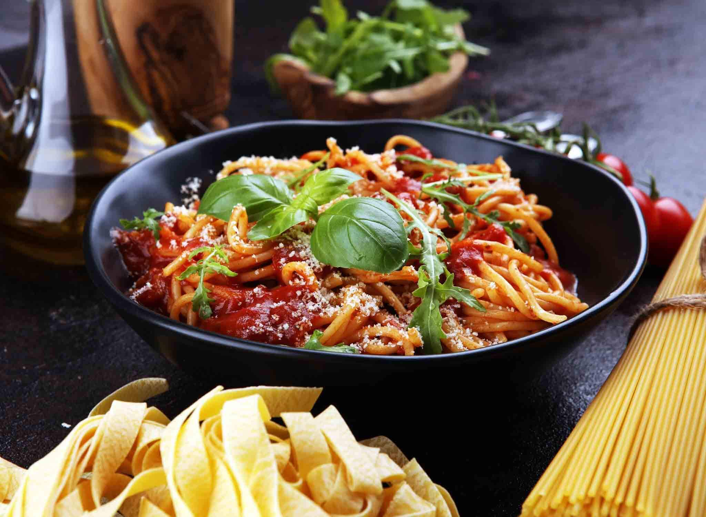

Pasta bolognese veisehakklihaga

| Koostisosad |
Kogus |
| Veisehakkliha |
300 g |
| Sibul, hakitud |
1 tk |
| Küüslauk, hakitud |
2-3 küünt |
| Juurseller, hakitud |
1-2 vart |
| Porgand, hakitud |
1 tk |
| Purustatud tomatid |
400 g |
| Tomatipasta |
2 sl |
| Itaalia ürdisegu |
maitsestamiseks |
| Sool ja pipar |
maitsestamiseks |
| Veidu suhkrut |
maitsestamiseks |
| Õli |
praadimiseks |
- Kuumuta pannil õli keskmisel kuumusel ja hauta sibulat, sellerit ja porgandit mõned minutid.
- Lisa pannile küüslauk ja hakkliha, haruta hakkliha väiksemateks tükkideks ja kuumuta, kuni hakkliha on küps ja värvi muutnud.
- Lisa pannile tomatipasta, maitseained ja purustatud tomat.
- Lase keema tõusta, alanda siis kuumust ja lase vaikselt podiseda 40-60 minutit.
- Kui kaste tundub liiga kuivaks keevat, lisa kas vett või puljongit.
- Maitseta soola, pipra ja tibakese suhkruga.
- Serveeri keedetud pastaga ja viimistle värskelt riivitud parmesani juustu ja ürtidega.